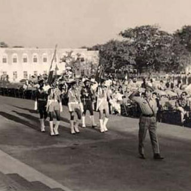
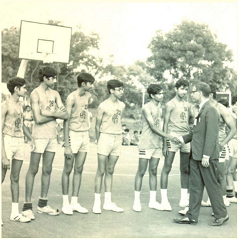

History
In 1919, a proposal was presented to the Seventh Nizam to establish a fully residential school on the lines of Eton College, London, to give the sons of Jagirdars an enriching learning experience. In 1923, the Jagirdar’s College opened its doors to five
students and six teachers under the first Founder-Principal Mr.H.W.Shawcross. The first batch appeared for Senior Cambridge ‘O’ levels in 1929. By 1930, the strength of the School had risen to 150. After the abolition of the Jagirdari system
in 1950, the Government decided that the College should be converted to an independent Public School, thus throwing open its portals to all, irrespective of class or creed. The Jagirdar’s College was re-organised in 1951 as The Hyderabad Public
School and was affiliated as a member of the Indian Public Schools Conference (IPSC). Mr John W.R. Kempe was appointed as the first Principal of the School and in 1962, Mr. Kuruvilla Jacob was appointed as the first Indian Principal of the
School.



Events
The World is a Work in Progress
April 19, 2023 - April 21, 2023
The World is a Work in Progress is an exemplerary event that invites students, parents and staff to come together and share their visions for the future of the world.
The Centuary Exhibition
April 22, 2023 - April 23, 2023
The Centuary Exhibition is an collection of the memories, stories and artifacts of the school as nominated by the students, staff, alumni and our associates.
The Sound of Music
April 26, 2023
The Sound of Music is an one-of-its-kind Musical concert, showing glimpses of the great culture and the legacy through the exuberant and youthful lens.
"Because leaders are not born, they are created"
Our Vision
HPS Begumpet provides holistic education, facilitates students to achieve their optimum potential and equips them to meet the challenges of life.
Our Mission
HPS deeply rooted in rich heritage and values has a sole mission of ensuring that the students proudly pass out of the school with:
i) Moral Values- Honesty, integrity and good judgement.
ii) Basic skills- Academic, creative,
social and personal.
iii) Tolerance and respect for others.
iv) A passion for continuous learning.